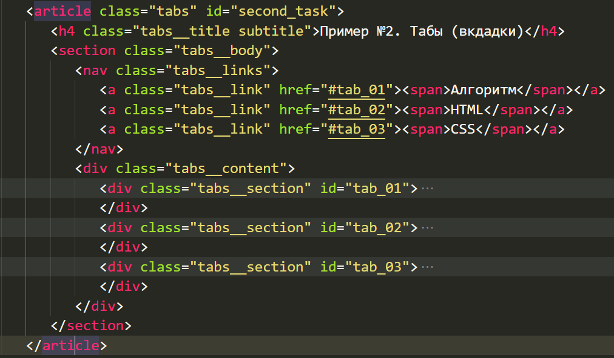
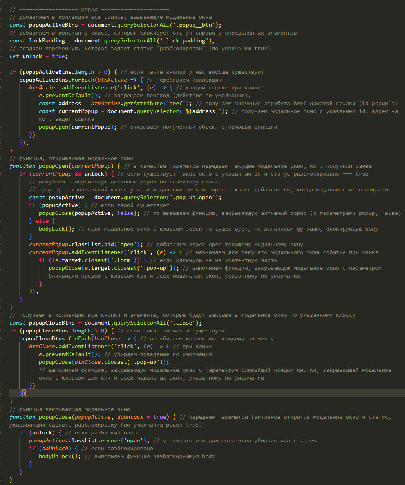
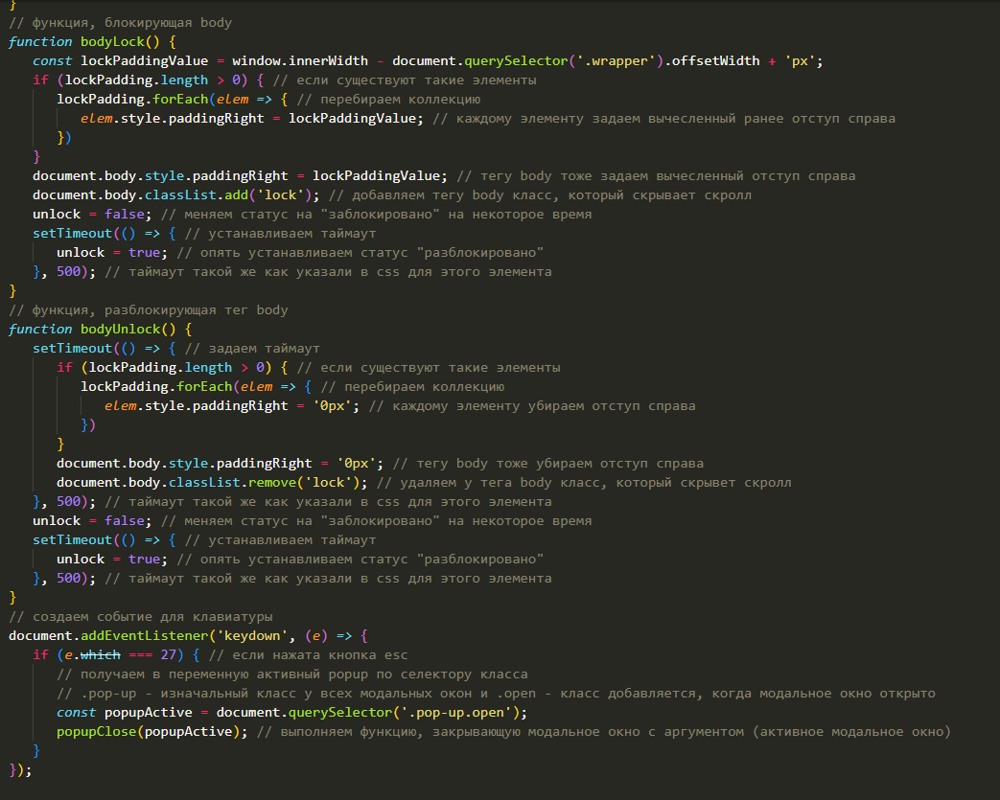
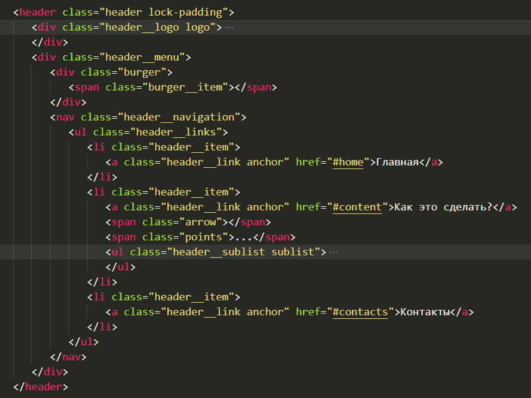

Как это сделать?
Аккардеон (спойлер)
HTML + Алгоритм
Аккардеон представляет собой секцию с заголовком и блоком с контентом под ним.
При клике на заголовок, открывается блок с контентом. При повторном клике на этот же заголовок, блок закрывается.
По желанию можно добавить функционал: если кликнули на другой заголовок, открывается блок с контентом под этим заголовком, ранее открытый блок с контентом закрывается.
CSS
- Добавляем псевдоэлементы заголовку (+- или стрелочки или другое). В зависимости от наличия класса 'active' показываем + или - или стрелка вверх или стрелка вниз
- Изначально скрываем блок с контентом (height: 0; overflow: hidden)
- Для отображения блока с контентом указываем overflow: visible; height: auto
- Показываем и скрываем блок с плавной анимацией
JS
- Получаем все элементы-заголовки в коллекцию.
- Перебираем эту коллекцию. Вешаем событие каждому элементу, при клике добавляем или убираем класс 'show'.
- Если у заголовка есть класс 'show', то показываем изначально скрытый блок с контентом под этим заголовком. Иначе скрываем этот блок.
Табы (вкдадки)
- В секцию с табами помещаем 2 блока:
- - блок с навигацией,
- - блок с контентом под блоком с навигацией.
- Количество элементов навигации равно количеству блокам с контентом.
- Каждая ссылка в таргете указываем id соответствующего блока.
- Вкладки по умолчанию закрыты, чтобы их открыть нужно кликнуть по заголовку (ссылке).

- Контейнеру с навигацией задаем display: flex (у флекс элементов одинаковая ширина).
- Тегам span у ссылок задаем z-index: 2
- Блоки с контентом изначально скрываем (display: none), задаем position:relative
- Относительно этих блоков абсолютно позиционируем псевдоэлементы.
- Эти псевдоэлементы сдвигаем вверх на высоту блока с навигацией, задаем ширину как у флекс-элемента в блоке навигации, высота равна высоте элемента в блоке навигации.
- Первый элемент позиционируем слева, последний справа, центральный - сдвигаем слева на ширину флекс-элемента блока навигации.
- С помомощью псевдокласса target блокам с контентом задаем display block, чтобы он появился при клике.
- Псевдоэлементам задаем цвет фона, как у каждого блока с контентом по желанию.
- Обязательно проверяем, как это будет смотреться на маленьких экранах, по необходимости исправляем
- Остальные стили на усмотрение
Модальные окна (pop-up)
При нажатии на ссылку открывается всплывающее окно, область страницы за ним затемняется и пока оно не закрыто, мы не можем взаимодействовать с остальным контентом кроме этого окна.
- Нужно создать контейнер с модальным окном, добавить ему класс popup, по которому js будет определять, что это модальное окно. Также добавляем уникальный id модальному окну.
- Нужно создать ссылку, при клике на которую будет открываться модальное окно. Добавляем ссылке общий класс popup__link, с помощью которого js будет будет определять, что этот элемент открывает модальное окно. Ее адрес - указанный для модального окна уникальный id.
- Создаем внутри модального окна контейнер, который выравнивает контент внутри себя как мы укажем, в основном указывают по центру страницы
- Добавляем в созданный ранее контейнер блок с контентом, добавляем ему общий класс popup__content, как и у всех подобных блоков, которые находятся в модальных окнах
- Позиционируем родительский блок с классом popup относительно окна браузера, задаем высоту и ширину на весь экран, скрываем изначально этот блок, задаем полупрозрачный оверлэй, который затемняет основной контент сайта за пределами всплывающего окна, добавляем плавности анимации.
- Для блока, который выравнивает контент модального окна по центру задаем соответствующие для этого свойства.
- При получении родительским блоком класса open, указывающим, что модальное окно открыто, показываем изначально скрытый блок, добавляем плавности появления.
- Элементам с классом popup__content задаем анимацию (можно через transform и transition), при получении родительским элементом класса open, по которому мы определяем, что открыто модальное окно.
- Тегу body по классу lock убираем скролл.
- Остальные стили на усмотрение.


Выпадающее многоуровневое меню. Меню "бургер"
HTML
- В хэдере размещаем логотип и меню. В меню добавляем 2 дочерних блока: иконку бургер и навигацию со списком ссылок. При клике на ссылку меню осуществляется плавный переход к соответствующему разделу
- Внутри блока навигации элементу списка с первым уровнем вложенности помещаем вложенный список с пунктами подменю.
- Добавляем к подменю еще 2 соседних элемента (теги span) с определенными классами: треугольник-стрелочка и вертикально расположенные ... (три точки)
- Хэдер имеет такую структуру:
Показать изображение

CSS
- Хэдеру задаем позиционирование относительно окна браузера, чтоб он был всегда вверху окна, ширина - 100%, z-index больше всех элементов страницы, задаем минимальную высоту, выстраиваем контент хэдера (логотип и меню) в колонки по горизонтали, элементы хэдера раскидываем по краям и задаем им максимальную ширину, выравниваем элементы хэдера по центру вертикально
- Логотипу задаем z-index больше, чем у навигации
- Меню бургер представляет из себя тег span с двумя псевдоэлементами, позиционированными снизу и сверху, относительно span. Меню-бургер изначально скрываем, задаем ему z-index меньше хэдера и логотипа
- Если меню бургер имеет статус (класс) активный, т.е. мы нажали на него, превращаем 3 полоски в крестик, скрывая полоску посередине и переворачивая псевдоэлементы под нужным углом
- Элементам списка с первым уровнем вложенности задаем position: relative, отступ сверху и снизу 10px, а также чуть больший шрифт
- Изначально скрываем стрелочку, открывающую подменю, а показываем три вертикальные точки ..., которые указывают что есть подменю
- Остальные стили, такие как отступы, переходы, размер шрифта и т.д. указываем на свое усмотрение
- Медиазапросы для устройств с разрешением выше 768px
- Выстраиваем элементы списка в колонки, задаем колонкам разрыв
- Список подменю позиционируем абсолютно элемента списка с первым уровнем вложенности, так чтобы он был под ним. Задаем списку (подменю) внутренние отстуры со всех сторон, минимальную ширину, цвет фона отличабщийся от остального контента, скрываем список (opacity + visibility), сдвигаем на 10% вверх, запрещаем события, задаем переходы.
- При наведении на элемент списка с первым уровнем вложенности вложенный список (подменю) меняет свойства: элементы списка подменю выстраиваются в колонки, показывается список подменю (opacity + visibility), сдвигается на изначальную позицию, разрешаются все события для вложенного списка (подменю).
- Медиазапросы для устройств с разрешением меньше 767px
- Отображаем ранее скрытое меню-бургер.
- Всю навигацию позиционируем относительно окна браузера, прячем влево на 100%, задаем ширину и высоту 100%, задаем полупрозрачный цвет фона, задаем отступ сверху на высоту хэдера + еще немного, остальные оступы на усмотрение, если контент меню не помещается на экране нужно дать возможность скроллить меню, также задаем переход для появления меню для свойства left(выезжает плавно слева)
- Чтобы меню не перекрывало контент хэдера, создаем псевдоэлемент для навигации, позиционируем его относительно окна браузера сверху, задаем ему ширину 100%, а высоту равную высоте хэдера, задаем z-index меньше, чем у элементов хэдера, задаем цвет фона непрозрачный
- Когда навигация получает статус (класс) 'активный', при нажатии на меню-бургер, сдвигается навигация на изначальную позицию (выезжает плавно слева)
- Элементам списка с первым уровнем вложенности задаем display: flex и выстраиваем в колонки по вертикали, чтобы ссылка, находящаяся внутри него занимала 100% ширины
- Изначально скрываем вложенный список (подменю) (opacity + visibility), максимальная ширина равна 0, немного смещаем вверх, задаем плавный переход
- Когда элемент списка с первым уровнем вложенности получает статус (класс) 'активный', отображаем список подменю (opacity + visibility), задаем максимальную высоту 100%, отступы сверху и по бокам, возвращаем на изначальную позицию, задаем плавный переход для всех свойств кроме внутреннего отступа слева, чтобы не съезжал
- Убираем три вертикальные точки (display)
- Отображаем стрелочку (треугольник) (рисуем с помощью border'ов), позиционируем абсолютно с небольшим смещением сверху и справа, при наведении на него отображается курсор, задаем плавный переход
- Когда стрелочка (треугольник) получает статус (класс) 'активный', переворачиваем его основанием вниз, задаем плавный переход
JS
- При клике на элементы-стрелочки (треугольники) будет открываться подменю. Получаем в коллекцию все элементы-стрелочки (треугольники). Если такие элементы существуют, перебираем коллекцию, каждому элементу коллекции вешаем событие, при клике у родительского элемента добавляется / удаляется статус (класс) 'активный'
- При клике на иконку бургер-меню, она меняется на крестик, и плавно появляется скрытое меню. А при клике на крестик, появляется иконка меню-бургер и закрывается плавно меню. Получаем в константы бургер-меню и навигацию со списком ссылок.При клике на иконку бургер-меню, если такая существует, добавляем / удаляем статус (класс) 'активный' у самой иконки-бургер и у элемента меню-навигации. Если бургер-меню имеет статус (класс) 'активный', то убираем скролл у тега body, а иначе добавляем скролл тегу body.
- При клике на ссылку меню или подменю, закрывается меню и скролл прокручивается к выбранному разделу. Получаем в коллекцию все ссылки меню и подменю. Если такие элементы существуют, перебираем коллекцию, каждому элементу назначаем событие, при клике убираем статус (класс) 'активный' у меню-бургера и навигации, а также добавляем скролл тегу body.
Плавная прокрутка к разделу
HTML
- При нажатии на ссылку или кнопку, экран прокуручивается к указанному в адресе ссылки элементу
- Добавляем ссылке в атрибут href: id секции (блока), всем таким ссылкам задаем одинаковый класс
- Указываем блокам, на который ведут ссылки уникальный id
CSS
На свое усмотрение
JS
- Получаем в коллекцию все ссылки, которые будут плавно прокручивать к указанному в атрибуте href id секции (блока)
- Получаем высоту header'a, если для него задана позиционирование относительно окна браузера
- Если такие ссылки существуют, то перебираем коллекцию
- Каждому элементу, при клике на него, убираем поведение по умолчанию
- Получаем в переменную адрес (id), на который указывает ссылка, при нажатии на определенную ссылку, значение этой переменной меняется. Если такие ссылки существуют,
- Получаем в переменную значение, на которое нужно прокрутить скролл окна браузера, так чтобы указанный в адресе ссылки блок (секция) находились ниже хэдера при прокрутке. Для этого нужно воспользоваться формулой: linkTarget.getBoundingClientRect().top + scrollY - headerHeight;
- Прокручиваем плавно (smooth) скролл, на вычесленное выше значение. window.scrollTo({ top: scrollValue, behavior: "smooth" });